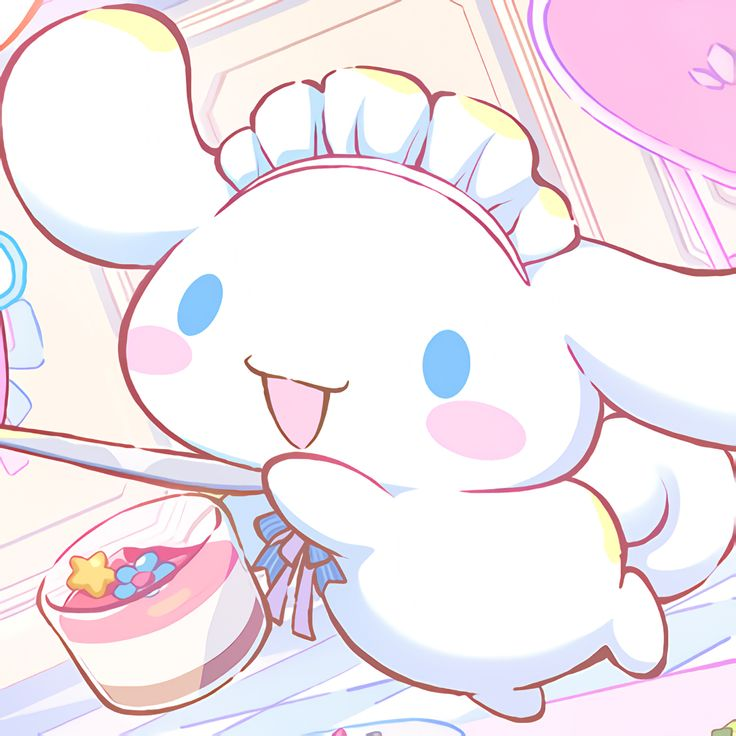

|  |
Cinamoroll, karakter lucu dari Sanrio, dikenal dengan bulu putih lembut, telinga yang panjang, dan mata berkilauan. Dia sering mengenakan pita biru di lehernya. Meskipun tidak memiliki kekuatan khusus, Cinamoroll terkenal karena kebaikan dan ketulusannya, selalu membawa kebahagiaan kepada orang-orang di sekitarnya. Ramah, ceria, dan penuh semangat, dia suka membuat teman-teman baru. Cinamoroll memiliki banyak teman di dunia Sanrio, seperti Hello Kitty dan My Melody, dan mereka sering menjaga satu sama lain dalam petualangan yang menyenangkan. |